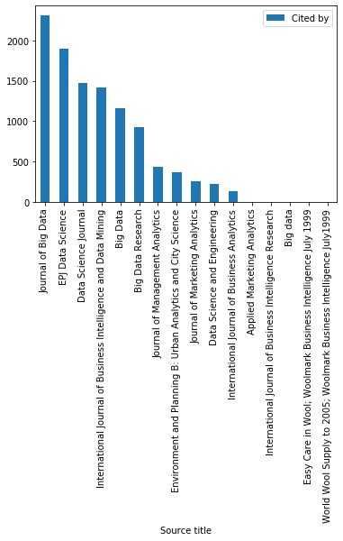
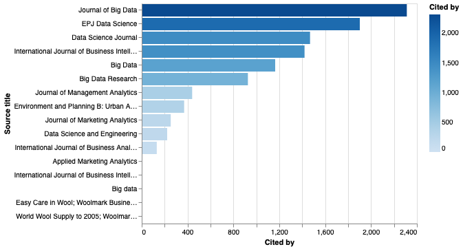
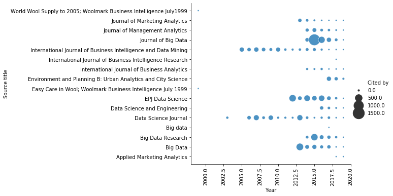
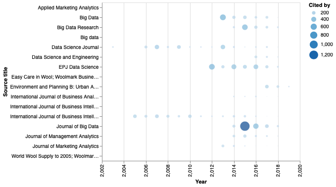
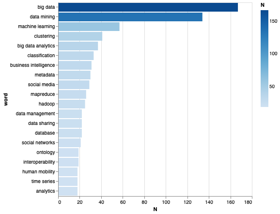
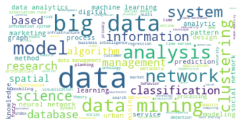
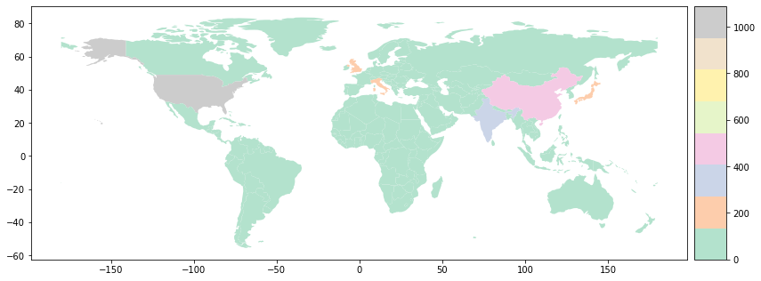
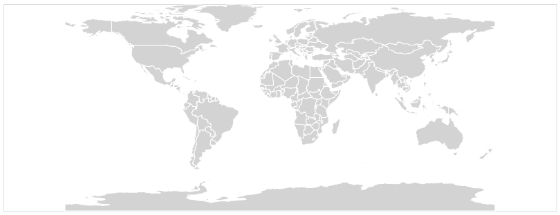

Análisis de publicaciones sobre analytics y big data en Scopus¶
En este tutorial se ejemplifica la realización del análisis exploratorio de datos aplicado a las revistas listadas en Scopus que contienen en sus nombres las palabras big data, data science, business intelligence y analitics.
[1]:
##
## Preparacion
##
import numpy as np
import pandas as pd
import seaborn as sns
import matplotlib as mpl
import matplotlib.pyplot as plt
import altair as alt
alt.renderers.enable('notebook');
%matplotlib inline
%load_ext rpy2.ipython
Descripción de la información¶
El archivo scopus-papers.csv contiene la información bibliográfica de los artículos seleccionados. Los nombres de las columnas son autoexplicativos.
[2]:
## Nombres de las columnas
!head -n 1 scopus-papers.csv | tr ',' '\n'
Authors
Author(s) ID
Title
Year
Source title
Volume
Issue
Art. No.
Page start
Page end
Page count
Cited by
DOI
Link
Affiliations
Authors with affiliations
Author Keywords
Index Keywords
Document Type
Publication Stage
Access Type
Source
EID
El archivo scopus-abstracts.csv contienen los abstracs de los artículos seleccionados.
[3]:
## Nombres de las columnas
!head -n 1 scopus-abstracts.csv | tr ',' '\n'
DOI
Link
Abstract
Carga de la información¶
[5]:
##
## Lectura de datos
##
papers = pd.read_csv("https://raw.githubusercontent.com/jdvelasq/playground/master/datasets/scopus-papers.csv",
sep = ',', # separador de campos
thousands = None, # separador de miles para números
decimal = '.', # separador de los decimales para números
encoding='latin-1') # idioma
papers.info()
<class 'pandas.core.frame.DataFrame'>
RangeIndex: 1902 entries, 0 to 1901
Data columns (total 23 columns):
Authors 1902 non-null object
Author(s) ID 1902 non-null object
Title 1902 non-null object
Year 1902 non-null int64
Source title 1902 non-null object
Volume 1860 non-null float64
Issue 1456 non-null object
Art. No. 531 non-null object
Page start 1411 non-null object
Page end 1411 non-null object
Page count 2 non-null float64
Cited by 1257 non-null float64
DOI 1825 non-null object
Link 1902 non-null object
Affiliations 1889 non-null object
Authors with affiliations 1899 non-null object
Author Keywords 1793 non-null object
Index Keywords 828 non-null object
Document Type 1902 non-null object
Publication Stage 1902 non-null object
Access Type 938 non-null object
Source 1902 non-null object
EID 1902 non-null object
dtypes: float64(3), int64(1), object(19)
memory usage: 341.8+ KB
[6]:
##
## Lectura de datos
##
abstracts = pd.read_csv("https://raw.githubusercontent.com/jdvelasq/playground/master/datasets/scopus-abstracts.csv",
sep = ',', # separador de campos
thousands = None, # separador de miles para números
decimal = '.', # separador de los decimales para números
encoding='latin-1') # idioma
abstracts.info()
<class 'pandas.core.frame.DataFrame'>
RangeIndex: 1902 entries, 0 to 1901
Data columns (total 3 columns):
DOI 1825 non-null object
Link 1902 non-null object
Abstract 1902 non-null object
dtypes: object(3)
memory usage: 44.7+ KB
Nombres de las revistas¶
[6]:
sorted(papers['Source title'].unique())
[6]:
['Applied Marketing Analytics',
'Big Data',
'Big Data Research',
'Big data',
'Data Science Journal',
'Data Science and Engineering',
'EPJ Data Science',
'Easy Care in Wool; Woolmark Business Intelligence July 1999',
'Environment and Planning B: Urban Analytics and City Science',
'International Journal of Business Analytics',
'International Journal of Business Intelligence Research',
'International Journal of Business Intelligence and Data Mining',
'Journal of Big Data',
'Journal of Management Analytics',
'Journal of Marketing Analytics',
'World Wool Supply to 2005; Woolmark Business Intelligence July1999']
[7]:
##
## Cantidad de revistas
##
len(papers['Source title'].unique())
[7]:
16
Cantidad de citas por año por revista¶
[8]:
df = papers.groupby(['Source title']).sum()[['Cited by']].sort_values('Cited by', ascending = False)
df
[8]:
| Cited by | |
|---|---|
| Source title | |
| Journal of Big Data | 2312.0 |
| EPJ Data Science | 1902.0 |
| Data Science Journal | 1468.0 |
| International Journal of Business Intelligence and Data Mining | 1420.0 |
| Big Data | 1164.0 |
| Big Data Research | 926.0 |
| Journal of Management Analytics | 440.0 |
| Environment and Planning B: Urban Analytics and City Science | 370.0 |
| Journal of Marketing Analytics | 253.0 |
| Data Science and Engineering | 222.0 |
| International Journal of Business Analytics | 131.0 |
| Applied Marketing Analytics | 2.0 |
| International Journal of Business Intelligence Research | 1.0 |
| Big data | 0.0 |
| Easy Care in Wool; Woolmark Business Intelligence July 1999 | 0.0 |
| World Wool Supply to 2005; Woolmark Business Intelligence July1999 | 0.0 |
[9]:
##
## Gráfico por defecto usando Matplotlib
##
df.plot.bar();

[10]:
##
## Gráfico usando Altair
##
df['Source title'] = [p for p in df.index]
alt.Chart(df).mark_bar().encode(
y = alt.Y('Source title:N', sort=alt.EncodingSortField(field='Cited by:Q')),
x = 'Cited by:Q',
color = 'Cited by:Q'
)
[10]:

Total de citas por año¶
[11]:
##
## Suma de citas agregada por título y año
##
df = papers.groupby(['Source title', 'Year']).sum()[['Cited by']]
##
## Los ejes para la gráfica deben ser campos
## en el DataFrame
##
df['Source title'] = [p[0] for p in df.index]
df['Year'] = [p[1] for p in df.index]
df.index = range(len(df))
df[0:5]
[11]:
| Cited by | Source title | Year | |
|---|---|---|---|
| 0 | 2.0 | Applied Marketing Analytics | 2018 |
| 1 | 0.0 | Applied Marketing Analytics | 2019 |
| 2 | 543.0 | Big Data | 2013 |
| 3 | 170.0 | Big Data | 2014 |
| 4 | 203.0 | Big Data | 2015 |
[12]:
sns.relplot(x = 'Year',
y = 'Source title',
size = 'Cited by',
sizes = (10, 500),
alpha = 0.8,
palette = 'viridis',
data = df);
plt.xticks(rotation=90);
/home/vagrant/.local/lib/python3.6/site-packages/seaborn/axisgrid.py:848: UserWarning: Tight layout not applied. The left and right margins cannot be made large enough to accommodate all axes decorations.
self.fig.tight_layout()

[13]:
alt.Chart(df).mark_circle().encode(
alt.X('Year:Q',
scale=alt.Scale(domain=(2002, 2019)),
axis=alt.Axis(labelAngle=270)),
alt.Y('Source title:N'),
size='Cited by',
color='Cited by'
)
[13]:

Palabras claves más frecuentes¶
[14]:
##
## Elimina los registros con valor NaN
##
words_temp = papers['Author Keywords'].map(lambda x: x if isinstance(x, str) else '')
##
## Convierte el string en una lista de palabras por registro
words_temp = [w.split(';') for w in words_temp]
##
## Elimina los espacios en blanco al principio y
## final de cada palabra clave y convierte la
## cadena en minúsculas
##
words_temp = [[e.strip().lower() for e in w if e.strip() != ''] for w in words_temp]
##
## Genera un registro por cada palabra clave
##
words = []
for w in words_temp:
words.extend(w)
words_wc = words
##
## Crea un DataFrame para realizar el conteo
##
words = pd.DataFrame({'word':words, 'N':1})
##
## Cuenta agregado por keyword
##
words = words.groupby('word').sum().sort_values(by='N', ascending = False)
words['word'] = words.index
words.index = range(len(words))
##
## Las 10 palabras más citadas
##
words[0:10]
[14]:
| N | word | |
|---|---|---|
| 0 | 167 | big data |
| 1 | 134 | data mining |
| 2 | 57 | machine learning |
| 3 | 41 | clustering |
| 4 | 37 | big data analytics |
| 5 | 33 | classification |
| 6 | 31 | business intelligence |
| 7 | 30 | metadata |
| 8 | 29 | social media |
| 9 | 26 | mapreduce |
[15]:
alt.Chart(words[0:20]).mark_bar().encode(
x = 'N:Q',
y = alt.Y('word:N', sort=alt.EncodingSortField(field='N:Q')),
color = 'N:Q'
)
[15]:

[16]:
from wordcloud import WordCloud, ImageColorGenerator
wordcloud = WordCloud(max_font_size=50, max_words=100, background_color="white").generate(' '.join(words_wc))
plt.figure()
plt.imshow(wordcloud, interpolation="bilinear")
plt.axis("off")
plt.show()

Contribuciones por país de origen¶
Uno de los gráficos comúnmente usados en los mapeos sistemáticos de literatura es la cantidad de artículos por país de origen. Este gráfico da una idea de en que lugares se está concentrando la investigación sobre el tópico abordado. A continuación se describe el código para este gráfico.
[17]:
##
## Reemplaza los campos que no son string por ''
##
affiliations = papers['Affiliations'].map(lambda x: x if isinstance(x, str) else '')
##
## Obtiene la afiliación por autor
##
affiliations = [affiliation.split(';') for affiliation in affiliations if affiliation != '']
##
## Genera una lista con una afiliación
## por elemento y crea un DataFrme
##
z = []
for w in affiliations:
z.extend(w)
z = [e.split(',')[-1].strip() for e in z]
z = [e for e in z if not e.isdigit()]
affiliations = pd.DataFrame({'country': z, 'q':1})
##
## Separa los campos de la afiliación por comas
##
affiliations['country'] = affiliations['country'].map(lambda x: x.split(','))
##
## El último campo es el país de affiliación
##
affiliations['country'] = affiliations['country'].map(lambda x: x[-1])
##
## Suma los registros por país
##
countries = affiliations.groupby('country').sum()
countries = countries.sort_values('q', ascending = False)
##
## DataFrame con la cantidad de artículos por país
##
countries[0:10]
[17]:
| q | |
|---|---|
| country | |
| United States | 1089 |
| China | 457 |
| India | 295 |
| United Kingdom | 250 |
| Japan | 239 |
| Italy | 175 |
| Germany | 124 |
| Australia | 121 |
| Canada | 93 |
| France | 93 |
[18]:
##
## Importa geopandas y la información para construir el gráfico
##
import geopandas
import geoplot
##
## Carga el DataFrame con la información general
## del gráfico
##
world = geopandas.read_file(geopandas.datasets.get_path('naturalearth_lowres'))
##
## Elimina la Antártica
##
world = world[world.name!="Antarctica"]
##
## Se genera una lista con los países
##
worldList = world['name'].tolist()
##
## Los nombres de los países obtenidos de los artículos
## no coinciden necesariamente con los existentes en
## el DataFrame world.
##
## Palabras que están en la lista de países de geopandas
## pero que no aparecen en los países listados en los papers
##
[w for w in sorted(worldList) if w not in countries.index.tolist()]
[18]:
['Afghanistan',
'Albania',
'Angola',
'Bahamas',
'Belarus',
'Belize',
'Benin',
'Bhutan',
'Bolivia',
'Bosnia and Herz.',
'Botswana',
'Brunei',
'Burkina Faso',
'Burundi',
'Cambodia',
'Cameroon',
'Central African Rep.',
'Chad',
'Congo',
'Cuba',
'Czechia',
"Côte d'Ivoire",
'Dem. Rep. Congo',
'Djibouti',
'Dominican Rep.',
'El Salvador',
'Eq. Guinea',
'Eritrea',
'Estonia',
'Falkland Is.',
'Fiji',
'Fr. S. Antarctic Lands',
'Gabon',
'Gambia',
'Ghana',
'Greenland',
'Guatemala',
'Guinea',
'Guinea-Bissau',
'Guyana',
'Haiti',
'Honduras',
'Iceland',
'Iraq',
'Jamaica',
'Kazakhstan',
'Kosovo',
'Kuwait',
'Kyrgyzstan',
'Laos',
'Latvia',
'Lesotho',
'Liberia',
'Libya',
'Lithuania',
'Macedonia',
'Madagascar',
'Malawi',
'Mali',
'Mauritania',
'Moldova',
'Mongolia',
'Montenegro',
'Myanmar',
'N. Cyprus',
'New Caledonia',
'Nicaragua',
'Niger',
'North Korea',
'Oman',
'Panama',
'Papua New Guinea',
'Paraguay',
'Peru',
'Puerto Rico',
'Russia',
'Rwanda',
'S. Sudan',
'Senegal',
'Sierra Leone',
'Slovakia',
'Solomon Is.',
'Somalia',
'Somaliland',
'Sri Lanka',
'Suriname',
'Syria',
'Tajikistan',
'Tanzania',
'Timor-Leste',
'Togo',
'Trinidad and Tobago',
'Turkmenistan',
'United States of America',
'Uruguay',
'Uzbekistan',
'Vanuatu',
'Vietnam',
'W. Sahara',
'Zambia',
'eSwatini']
[19]:
##
## Palabras que están en la lista de países de los papers
## pero que no aparecen en los países de geopandas
##
[w for w in sorted(countries.index.tolist()) if w not in worldList]
[19]:
['Amman',
'CAS',
'CASS',
"Cote d'Ivoire",
'Czech Republic',
'Department of Information Management',
'French Polynesia',
'Gradute Univ. of CAS',
'Hong Kong',
'Libyan Arab Jamahiriya',
'Madurai',
'Mauritius',
'Melmaruvathur',
'Open Culture International Association',
'Peking University',
'RTL â\x80\x93 RTL',
'Russian Federation',
'Singapore',
'Syrian Arab Republic',
'Tamil Nadu',
'Tamil Nadu 630 561',
'Thinghua University',
'Think3 Inc.',
'United States',
'Viet Nam']
[20]:
##
## A continuación se corrigen las diferencias
##
new_index = countries.index.tolist()
new_index = ['United States of America' if x == 'United States' else x for x in new_index]
new_index = ['Russia' if x == 'Russian Federation' else x for x in new_index]
new_index = ['Syria' if x == 'Syrian Arab Republic' else x for x in new_index]
new_index = ['Vietnam' if x == 'Viet Nam' else x for x in new_index]
##
## Se asigna el nuevo índice con los nombres corregidos
##
countries.index = new_index
[21]:
##
## Agrega el conteo al DataFrame
##
world.index = world['name'].tolist()
world['q'] = 0
for country in countries.index.values.tolist():
world.at[country, 'q'] = countries.loc[country].q
[22]:
from mpl_toolkits.axes_grid1 import make_axes_locatable
fig, ax = plt.subplots(1, 1, figsize=(14, 7))
divider = make_axes_locatable(ax)
cax = divider.append_axes("right", size="5%", pad=0.1)
world.plot(column='q', legend=True, ax=ax, cax=cax, cmap='Pastel2');

Apéndice — worldmap en Altair¶
[23]:
from vega_datasets import data
source = alt.topo_feature(data.world_110m.url, 'countries')
data = pd.DataFrame({'id':['Canada', 'Colombia'],
'value': ['yellow', 'red']})
alt.Chart(source).mark_geoshape(
fill='lightgray',
color='value:N',
stroke='white'
).transform_lookup(
lookup='id',
from_=alt.LookupData(data, 'id', ['value'])
).properties(
width=800,
height=300
).project('equirectangular')
[23]:
